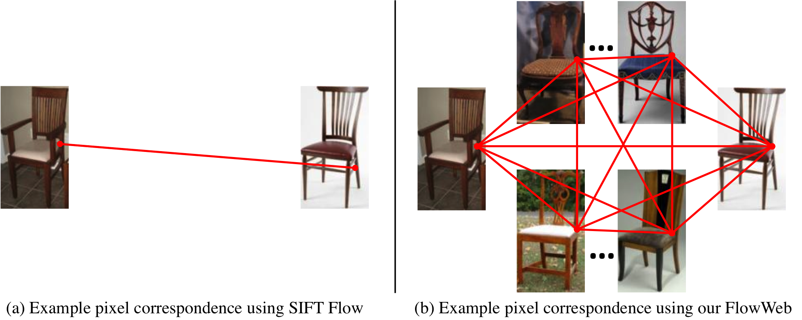

FlowWeb: Joint Image Set Alignment by Weaving Consistent, Pixel-wise Correspondences
{kind=link}
PeopleAbstractGiven a set of poorly aligned images of the same visual concept without any annotations, we propose an algorithm to jointly bring them into pixel-wise correspondence by estimating a FlowWeb representation of the image set. FlowWeb is a fully-connected correspondence flow graph with each node representing an image, and each edge representing the correspondence flow field between a pair of images, i.e. a vector field indicating how each pixel in one image can find a corresponding pixel in the other image. Correspondence flow is related to optical flow but allows for correspondences between visually dissimilar regions if there is evidence they correspond transitively on the graph. Our algorithm starts by initializing all edges of this complete graph with an off-the-shelf, pairwise flow method. We then iteratively update the graph to force it to be more self-consistent. Once the algorithm converges, dense, globally-consistent correspondences can be read off the graph. Our results suggest that FlowWeb improves alignment accuracy over previous pairwise as well as joint alignment methods. |
Paper
CVPR paper. (pdf, 9.3MB)Presentation
pptx, 13.7MBCode & Data
Matlab implementation on Github.PASCAL VOC data used in the paper.
Our alignment results (2GB) on the PASCAL VOC data.